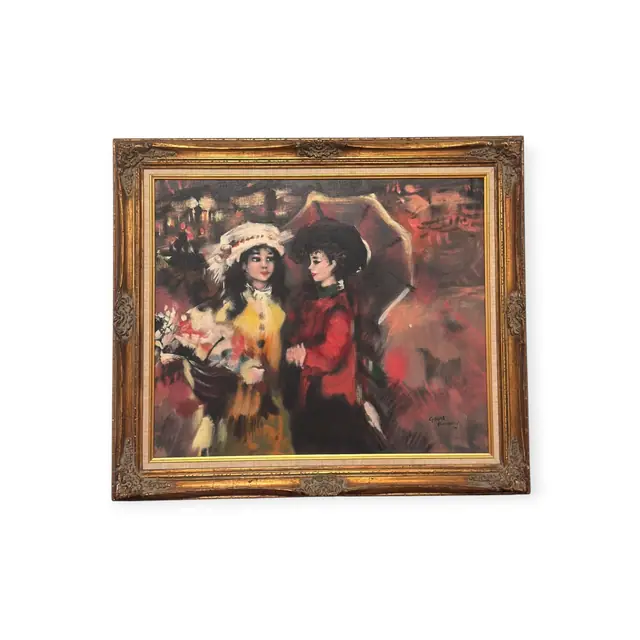
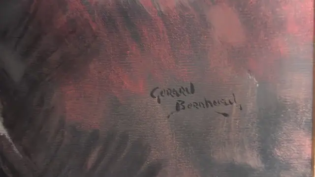
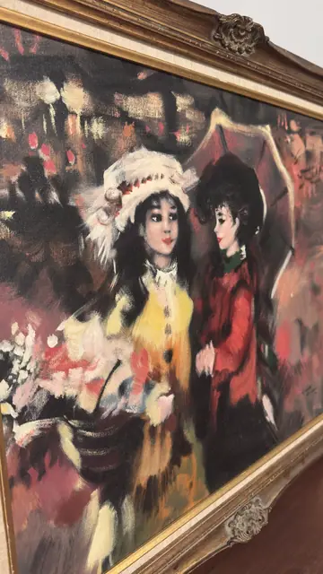

Paintings & Prints
Two Ladies with Parasols and Flowers, Gerard Bernhard, Signed, Framed
Gerard Bernhard · third quarter of the 20th century
Price Upon Request



About the Item
Gerard Bernhard. Two stylised women stand close together at the centre: one in a wide white plumed hat and mustard-yellow coat holding a basket of blossom, the other in a scarlet jacket and dark hat, both under open parasols. Behind them the boulevard dissolves into slashing strokes of crimson, plum, ochre and near-black with scattered red and white lights - the background is nearly abstract while the faces are drawn with fine dark lines and porcelain-pale skin. The paint is applied in long dragged strokes over an open canvas weave, giving a smoky, theatrical effect. Medium: oil on canvas. Signed lower left of the canvas, in black, reading "Gerard Bernhard". Inscribed on the reverse or mount: Gerard Bernhard. Condition: Paint surface appears sound. The gilt frame has rubbing and small losses on the raised ornament, and the linen liner is lightly soiled.
Details
- Creator:
- Gerard Bernhard
- Creation Year:
- third quarter of the 20th century
- Dimensions:
- Height: 26.0 in (66.04 cm)
Width: 29.25 in (74.3 cm)
outside of frame - Medium:
- oil on canvas
- Period:
- 20Th
- Condition:
- Offered in the condition shown in the photographs.
- Reference Number:
- VO-89
- Documentation:
- no certificate photographed with this listing - but see uncertainty
- Gallery Location:
- Gerard Bernhard